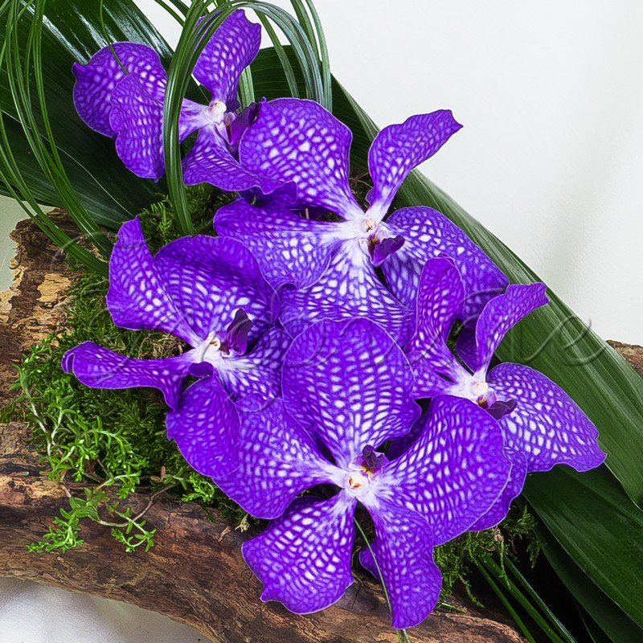

Ванда
Ванда (Vanda) е род орхидеи, известен със своите големи и ярки цветя. Те могат да бъдат в различни цветове като синьо, лилаво и червено. Вандата е популярна в Азия и е предпочитана за декоративни цели.
Основни характеристики:- Цветя: Големи, ярки, с диаметър до 10 см.
- Листа: Дълги, тесни, зелени или сребристи.
- Растеж: Въздушни, хранят се от въздуха и влагата.
- Светлина: Ярка, но разсеяна. Избягвайте пряка слънчева светлина.
- Температура: 20-30°C през деня и 15-18°C през нощта.
- Поливане: Редовно, но без застояла вода.
- Влажност: Висока (70-80%).
- Подхранване: Използвайте тор за орхидеи веднъж месечно през зимата и два пъти през лятото.
- Саксия: Специална смес за орхидеи с добра дренажност.
Торете на всеки 2-3 седмици с течен тор за орхидеи.
Вандата изисква внимателни грижи, но с правилно отглеждане може да бъде впечатляващо красиво растение.
